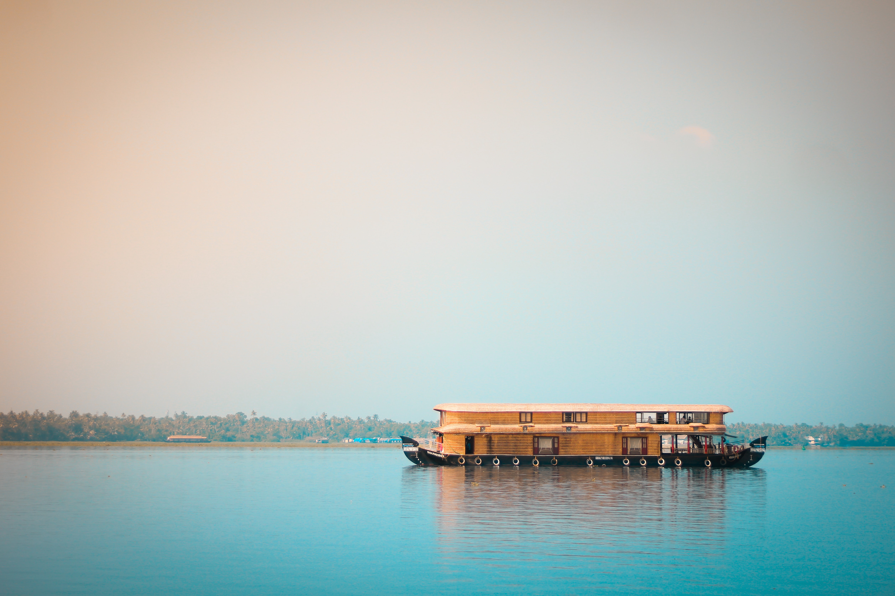

Welcome To
Gods Own Country
Kerala always known for the scenic beauty, natural beauty and other attractions, Kerala tourism never had to look back ever in its growth. Kerala is known for its densely forested mountain ranges comprising the Western Ghats and covering tropical evergreen, deciduous and semi-deciduous jungles that are home to some rare, exotic plant life and wildlife species. These hill stations and high range zones are the favourite haunts of nature and wildlife enthusiasts.Kerala named as one of the ten paradises of the world by National Geographic Traveler
